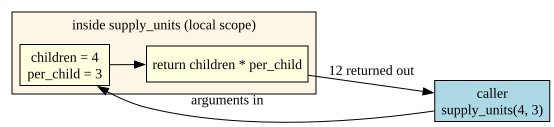

Welcome to the Lost Crew Rescue Company. A shipful of children is stranded, and the Company has taken The Big Contract to bring every last one home.
Wendy Darling, the operations lead — who assigns every task in “thimbles” of responsibility and refuses to explain the unit — has the same problem Scrooge had last notebook, only worse. A rescue isn’t a straight line. Some children need a medic; some need an escort; some are ready to go. The plan has to make decisions and repeat itself for every child, and it’s far too big to write as one block — it has to be broken into reusable pieces.
That’s this entire notebook: programs that choose, programs that repeat, and programs broken into named, reusable parts.
The Roadmap
Part
What you’ll learn
Making decisions
if / elif / else, nested decisions
Repeating until done
while loops, and the infinite-loop trap
Repeating a known number of times
for loops, range, looping over a list
Steering loops
break, continue, loops inside loops
Functions
def, parameters, return, scope, decomposition
Testing
finding the inputs that break your code
Everything builds on Notebook 3: a loop’s condition is just a boolean expression, and the workflow is still problem → pseudocode → flowchart → Python → verify.
Notebook 3 left one shape greyed-out in the flowchart legend: the decision diamond. Every program so far ran straight down, top to bottom. That ends now — the diamond comes alive in the very next section.
Same habit as last notebook: most code cells open with a # ⬇️ CHANGE THESE block. Edit the values, press Shift + Enter, watch the behaviour change. Loops and conditionals are best understood by poking them until they surprise you.
Making Decisions: if
Tinker Bell handles signals. She can hold exactly one feeling at a time — she is, functionally, a single bool. The gate either opens or it doesn’t.
An if statement runs a block of code only when a condition is True. The condition is exactly the kind of boolean expression you built in Notebook 3.
if <condition>:
<do this, only if the condition is True>
Two things Python is strict about: the colon after the condition, and the indentation of the block. The example below opens a gate only for the right password — change it and re-run.
# ⬇️ CHANGE THIS, THEN RE-RUNpassword ="pixie"# ----------------------------------if password =="pixie":print("Tinker Bell flares green.")print("The gate opens.")print("(the check is over)")
Tinker Bell flares green.
The gate opens.
(the check is over)
Understanding the Code
password == "pixie" is a boolean expression — True or False (note ==tests, =assigns; the NB 3 trap).
Both indented lines run together, only when the condition is True. They are the block.
print("(the check is over)") is not indented, so it runs every time. Change password to anything else: the green-flare lines vanish, the last line stays.
elif and else: Choosing One of Many
Captain Hook runs the rival outfit by rigid Articles: a table of rules where exactly one applies. That’s if / elif / else:
if — checked first
elif (“else if”) — checked only if the ones above were False; you can have many
else — the catch-all when nothing above matched
Python checks them top to bottom and stops at the first True. The next cell sets a crew member’s share by rank — try each rank.
# ⬇️ CHANGE THIS, THEN RE-RUNrank ="bosun"# ----------------------------------if rank =="captain": share =50elif rank =="bosun": share =20elif rank =="deckhand": share =10else: share =0print(f"Hook's Articles grant a {share}% share.")
Hook's Articles grant a 20% share.
Understanding the Code
With rank = "bosun": the if is False, the first elif is True → share = 20, and Python skips the rest entirely. deckhand and else are never even looked at.
Order matters. If two conditions could both be true, the first one wins.
else has no condition — it’s whatever’s left. Try rank = "stowaway": nothing matches, so else gives share = 0.
The Same Logic, as a Flowchart
Here is the if/elif/else above, drawn as a flowchart — the decision diamond Notebook 3 promised. Trace it like the code: enter at Start, follow a True or False arrow out of each diamond, and notice every path ends at the same print.
Reading it: each diamond is one condition; the True arrow runs that branch, the False arrow falls through to the next test. Exactly one yellow box is ever reached. That single-path-through is the visual definition of if/elif/else.
Decisions Inside Decisions
A decision can live inside another. The Sentry, Doran Holt — who won’t let his own mother in without the password — needs two things true, in order: first a valid password, then a place on the list. The next cell nests one if inside another.
# ⬇️ CHANGE THESE, THEN RE-RUNhas_password =Trueon_the_list =False# ----------------------------------if has_password:if on_the_list:print("Welcome aboard.")else:print("Password ok — but you're not on the list.")else:print("No password, no entry.")
Password ok — but you're not on the list.
Understanding the Code
The indentation level shows the nesting: the inner if/else is two levels deep, so it only runs when the outer if is True.
This same logic could be written with and from Notebook 3: if has_password and on_the_list:. Nesting is clearer when the two checks need different messages; and is shorter when they don’t. Both are valid — choose the readable one.
Repeating Until Done: while
Peter Pan is the field agent who never quits. A while loop is his whole personality: repeat a block as long as a condition stays True.
while <condition>:
<repeat this block>
The condition is re-checked before every pass. Use while when you don’t know in advance how many repetitions you’ll need — only the condition that means “stop.” The next cell counts a clock down to zero.
The crocodile clock ticks: 5 left
The crocodile clock ticks: 4 left
The crocodile clock ticks: 3 left
The crocodile clock ticks: 2 left
The crocodile clock ticks: 1 left
Time's up. Tick tock.
Understanding the Code — the Three-Part Loop
Every safe while loop has three parts. Lose one and it breaks:
Initialise — minutes = 5 before the loop.
Test — while minutes > 0: re-checked each pass.
Progress — minutes = minutes - 1moves the variable toward the stop condition.
The line that matters most is the progress line. Delete it and minutes is always 5, the condition is always True, and the loop runs forever.
⚠️ The Infinite Loop
Peter Pan refuses to grow up. As code, he is a loop with no progress toward its exit:
age =10while age <18:print("Peter refuses to grow up.")# age never changes -> the condition is always True -> forever
(Deliberately not a runnable cell.) If you ever start one by accident, stop it in Colab with the ⏹ button or Runtime → Interrupt execution. The cure is always the same: make sure something inside the loop moves the test toward False.
The while Loop, as a Flowchart
A while loop is the first flowchart with an arrow that goes backwards. Watch the “loop back” edge: the diamond is tested, the body runs, and control returns to the diamond — over and over, until the test is finally False.
Reading it: the loop back arrow is the repetition. The only way out is the False edge — which only happens because the body changes minutes. No backward arrow that can ever turn False = infinite loop.
Repeating a Known Number of Times: for
Nana, head of safety, patrols the whole nursery every night, in order, and counts every child twice because once is not rigorous. When you know exactly what to step through, use a for loop.
range(1, n + 1) produces 1, 2, ..., n (the + 1 because range stops before its second number — the rule from Notebook 1’s loops). The next cell patrols a fixed number of children.
# ⬇️ CHANGE THIS, THEN RE-RUNchildren =4# ----------------------------------for child inrange(1, children +1):print(f"Nana checks child #{child}")print("Nursery secure.")
child is the loop variable. Each pass it automatically takes the next value from range — you never update it yourself (the difference from while).
The loop runs a known number of times: exactly children. No infinite-loop risk — range is finite.
Use for when you can say “do this once for each ”; use while when you can only say ”keep going until ”.
Looping Directly Over a List
A for loop doesn’t need range at all — it can step straight through a list, handing you each item in turn. This is the cleanest loop in Python, and the next cell walks a roster of names.
# ⬇️ CHANGE THIS LIST, THEN RE-RUNroster = ["Wendy", "John", "Michael"]# ----------------------------------for name in roster:print(f"Accounted for: {name}")print(f"{len(roster)} children on the roster.")
Accounted for: Wendy
Accounted for: John
Accounted for: Michael
3 children on the roster.
Understanding the Code
for name in roster: walks the list element by element; name is each child in turn. No range, no indexing.
len(roster) is the list’s length (the same len from Notebook 3). Lists get a full notebook of their own next — here they’re just something to loop over.
Totalling With an Accumulator
Looping is most useful when each pass adds to a running total. You’ve seen this exact pattern before — Notebook 1’s Lovelace factorial used running_product. The next cell uses the same idea to total supplies across a roster.
# ⬇️ CHANGE THESE, THEN RE-RUNsupplies_per_child =3roster = ["Wendy", "John", "Michael", "Tootles"]# ----------------------------------total =0# the accumulator — start emptyfor name in roster: total = total + supplies_per_childprint(f"Pack {total} supply units for {len(roster)} children.")
Pack 12 supply units for 4 children.
Understanding the Code
This is the accumulator pattern, now inside a real loop:
Initialise before the loop:total = 0.
Update inside the loop:total = total + supplies_per_child, once per child.
Use after the loop: print it.
Initialise / update / use. Almost every “add up / count / collect” task is this pattern — the same shape as Lovelace’s running_product.
Steering Loops: break and continue
Two keywords change a loop’s flow, and both are almost always guarded by an if:
break — leave the loop immediately, skip whatever’s left.
continue — skip the rest of this pass and jump to the next one.
The next cell searches a roster: it skips one name and stops entirely at another.
# ⬇️ CHANGE THESE, THEN RE-RUNroster = ["Wendy", "John", "Slightly", "Michael", "Nibs"]looking_for ="Slightly"# ----------------------------------for name in roster:if name =="John":continue# skip John, keep searchingif name == looking_for:print(f"Found {name}! Stop the search.")break# leave the loop entirelyprint(f"Checked {name}")print("Search ended.")
Checked Wendy
Found Slightly! Stop the search.
Search ended.
Understanding the Code
continue at John: the print(f"Checked ...") line is skipped for John only; the loop moves straight to Slightly.
break at Slightly: the loop stops dead. Michael and Nibs are never checked.
This is nested logic: an if inside a for. Most real loops look like this — repetition wrapped around decisions.
Loops Inside Loops
A loop can contain another loop. Nana’s rounds aren’t one night — they’re every child, every night. The next cell puts a child-loop inside a night-loop.
# ⬇️ CHANGE THESE, THEN RE-RUNnights =2children =3# ----------------------------------for night inrange(1, nights +1):for child inrange(1, children +1):print(f"Night {night}: Nana checks child #{child}")
Night 1: Nana checks child #1
Night 1: Nana checks child #2
Night 1: Nana checks child #3
Night 2: Nana checks child #1
Night 2: Nana checks child #2
Night 2: Nana checks child #3
Understanding the Code
The inner loop runs fully for each single pass of the outer loop. Outer at night 1 → inner counts all 3 children → then outer moves to night 2.
Total lines printed = nights × children = 2 × 3 = 6. Nested loops multiply; that matters a lot for speed later in the course.
Indentation depth shows the nesting — read it like an outline.
A Practice Game: Flow Arcade
Same arcade family as Notebooks 2–3, now for control flow. Two modes:
"branch" — a random if/elif/else is shown; predict what it prints
"count" — a random loop is shown; predict how many lines it prints
Every round is generated fresh and the answer is computed by Python doing the same logic — the snippet is shown, not run. Run the cell, read the walk-through, then do the exercise.
import randomdef _make_branch_question(): x = random.randint(1, 20) lo = random.randint(5, 9) hi = random.randint(12, 16) lines = [f"x = {x}",f"if x < {lo}:"," print('low')",f"elif x < {hi}:"," print('mid')","else:"," print('high')"]if x < lo: ans ="low"elif x < hi: ans ="mid"else: ans ="high"return"\n".join(lines), ansdef _make_count_question(): kind = random.choice(["for_range", "while_down", "for_step"])if kind =="for_range": n = random.randint(3, 9) lines = [f"for i in range({n}):", " print(i)"] ans =str(n)elif kind =="while_down": start = random.randint(3, 8) lines = [f"n = {start}", "while n > 0:"," print(n)", " n = n - 1"] ans =str(start)else: stop = random.choice([10, 12, 14, 16]) step = random.choice([2, 3]) lines = [f"for i in range(0, {stop}, {step}):", " print(i)"] ans =str(len(range(0, stop, step)))return"\n".join(lines), ansdef flow_arcade(mode="branch", rounds=5):"""Self-study practice. mode is 'branch' or 'count'.""" score = streak = best =0for r inrange(1, rounds +1):if mode =="branch": shown, answer = _make_branch_question()print(f"\nRound {r} — what word does this print?\n\n{shown}") guess =input("Output: ").strip().lower()elif mode =="count": shown, answer = _make_count_question()print(f"\nRound {r} — how many lines print?\n\n{shown}") guess =input("Count: ").strip()else:print("Unknown mode. Use 'branch' or 'count'.")returnif guess == answer: score +=1; streak +=1; best =max(best, streak)print("✅ Correct!")else: streak =0print(f"❌ Not quite — the answer was: {answer}")print(f"\n[{mode}] score: {score}/{rounds} best streak: {best}")# ▶ TO PLAY: delete the # on ONE line below, then run this cell.# flow_arcade("branch")# flow_arcade("count")
Understanding the Code
branch builds the if/elif/else text, then runs the same comparisons in real Python to get the answer. Shown text and answer can’t disagree.
count computes the answer from the loop’s own maths — range(n) runs n times; the down-counter runs start times; len(range(0, stop, step)) is the step count. No guessing, no eval.
Same shape as gate_arcade, base_arcade, trace_arcade: pick a mode, loop rounds, track score and streak. You now have four arcades — together they’re a complete pre-quiz workout.
✏️ Exercise 1 — Extend the Flow Arcade
Self-study: play both modes until you can hit a streak of 5.
Coding task — pick one: - Add a "nested" count case: a loop inside a loop, with the answer = outer × inner, or - Add a fourth branch (elif) to _make_branch_question and update the computed answer to match.
Then play your version and paste your score into a markdown cell.
Using AI here: ask Gemini “add a nested-loop count case to this function in the same style.” Then hand-trace two generated questions to confirm the count is right before trusting it. AI is a fast first draft; you verify.
Decomposing Problems into Functions
Wendy Darling never tackles The Big Contract as one job. She splits it into named sub-tasks, solves each once, and reuses them. That is decomposition, and the tool is the function.
You met def informally in Notebook 1. Here it is, precisely:
def name(parameters):
<body>
return <a value>
Parameters are named inputs the caller fills in.
return hands exactly one value back.
Calling it — name(arguments) — is itself an expression that becomes the returned value. The next cell defines and calls one.
def supply_units(children, per_child):return children * per_child# ⬇️ CHANGE THESE CALLS, THEN RE-RUNneeded = supply_units(4, 3)print(f"Pack {needed} units.")print(supply_units(10, 2))
Pack 12 units.
20
Understanding the Code
def supply_units(children, per_child): defines the function but does not run it. Nothing happens until it’s called.
supply_units(4, 3) calls it: children becomes 4, per_child becomes 3, the body runs, return hands back 12.
needed = supply_units(4, 3) stores that returned value; print(supply_units(10, 2)) uses it directly. The call behaves exactly like the value it returns.
return vs print
This is the single most common point of confusion with functions, so it gets its own example. return and print look similar but do completely different things. The next cell defines one function that returns and one that only prints, then inspects what the caller actually gets back.
def adds(a, b):return a + b # hands the value backdef shows(a, b):print(a + b) # only displays it; returns nothingr = adds(2, 3) # r holds 5s = shows(2, 3) # prints 5, but s holds Noneprint("r =", r, " s =", s)
5
r = 5 s = None
Understanding the Code
return gives a value back to the program — you can store it, do maths with it, pass it on.
print only puts text on the screen — the program gets nothing back.
A function with no return automatically returns None. That’s why s is None: shows printed 5 but handed nothing back. If a function’s result “disappears,” you almost certainly printed where you meant to return.
Scope: A Box That Stays Inside
Remember the “named box” from Notebook 3? Inside a function, a variable lives in a box that only exists while that function runs. The next cell makes a local variable, returns it, and then tries to peek at it from outside.
def brew(): secret ="pixie dust"# a LOCAL box — exists only inside brew()return secretprint(brew()) # works: 'pixie dust'# Uncomment the next line to see the error scope protects you from:# print(secret) # NameError: 'secret' is not defined out here
pixie dust
Understanding the Code
secret is local to brew(). When the function returns, the box is thrown away.
Using secret outside is a NameError — out there, the name was never defined.
Parameters are local too. This is why functions are safe building blocks: their internals can’t collide with names elsewhere. Decomposition works because each piece is sealed.
Picture It: Arguments In, Value Out
A function call is a small round trip. The diagram below shows it: the caller passes arguments in, the function works in its own sealed local scope, and a single value comes back out.
g = Digraph(graph_attr={"rankdir": "LR"})g.node("C", "caller\nsupply_units(4, 3)", shape="box", style="filled", fillcolor="lightblue")with g.subgraph(name="cluster_fn") as f: f.attr(label="inside supply_units (local scope)", style="filled", fillcolor="oldlace") f.node("P", "children = 4\nper_child = 3", shape="box", style="filled", fillcolor="lightyellow") f.node("R", "return children * per_child", shape="box", style="filled", fillcolor="lightyellow") f.edge("P", "R")g.edge("C", "P", label=" arguments in ")g.edge("R", "C", label=" 12 returned out ")g

Reading it: the shaded box is the local scope — children and per_child exist only in there. The caller never sees inside; it only sends arguments in and receives one value out. That sealed boundary is exactly what makes functions reusable.
The Workflow, With Functions: the Lost Crew Supply Run
Now decomposition pays off on a real problem, through the full workflow. Wendy’s problem, stated plainly:
Given a roster where each child has a status ("medical", "escort", or anything else meaning "ready"), compute the total supply units the rescue needs. Medical children need 5, escort children need 3, ready children need 1.
Inputs:roster (a list of status strings)
Output: total supply units (an integer)
Decomposition: one function decides one child (assess); another loops the whole roster and accumulates (mission_total).
Step 2 — Pseudocode
FUNCTION assess(status):
1. IF status = "medical": RETURN 5
2. IF status = "escort": RETURN 3
3. OTHERWISE: RETURN 1
FUNCTION mission_total(roster):
1. SET total = 0
2. FOR each status in roster:
2a. SET total = total + assess(status)
3. RETURN total
Two small algorithms. mission_totalcallsassess — a function using a function. That’s decomposition in one picture.
Step 3 — The Flowchart
Here is mission_total as a flowchart. Notice it’s a for loop over the roster with the accumulator inside — and each pass calls assess to decide that one child.
Reading it: the diamond is the for loop’s “any more items?” test; the yes arrow loops back through the accumulator; the no arrow leaves with the finished total. The assess(status) call hides a whole second flowchart inside one box — that’s the power of decomposition.
Step 4 — The Python
Now translate both pseudocode functions line for line. Editable roster at the top so you can test it; the verification comes right after.
# ⬇️ CHANGE THIS ROSTER, THEN RE-RUNroster = ["medical", "ready", "escort", "ready", "medical"]# ----------------------------------def assess(status):if status =="medical":return5elif status =="escort":return3else:return1def mission_total(children): total =0for status in children: total = total + assess(status)return totalprint(f"Supplies needed: {mission_total(roster)} units")
Supplies needed: 15 units
Understanding the Code
assess is pure decision logic — one if/elif/else, one return per branch. It handles one child and nothing else.
mission_total is the accumulator pattern (initialise / update / use) looping the roster and callingassess each pass.
The last line is the whole program: call one function, print the result. Each piece is small enough to check on its own — the entire point of decomposition.
Total = 5 + 1 + 3 + 1 + 5 = 15. Run the cell — it should print 15. Predicting the answer before running is the habit; the next section makes it a discipline.
✏️ Exercise 2 — Run the Whole Pipeline
Take this through all four steps (problem → pseudocode → flowchart → Python → verify):
For a roster of statuses, compute the rescue payout: every child is worth 10 coins, and every "medical" child adds a 5-coin hazard bonus. Print the total payout.
Problem: inputs and output.
Pseudocode: house conventions; decompose it (a per-child function + a loop).
Flowchart: words, or adapt the graphviz above.
Python + verify: editable roster, then hand-check one example.
No solution is given. Hint: it’s the same shape as assess + mission_total.
✏️ Exercise 3 — Decompose With AI 🤖 AI-Assisted
Given a roster of statuses, report two numbers: how many children need an escort, and the total supplies (using the same 5/3/1 rule).
Write pseudocode by hand that breaks this into at least two functions. No Python yet.
Ask the AI to critique your decomposition only: “Here is my pseudocode. Are my functions well chosen? Anything mis-split or missing? Do not write code.”
Revise your pseudocode from the feedback.
Implement it yourself, then test with an editable roster (include an empty one).
Reflect in a markdown cell: what did the AI’s critique catch about your plan?
Graded on the decomposition and the verification — not on the AI’s words.
Testing With Edge Cases
Mr. Smee reads the fine print nobody else will. His idea of a threat is “but what if there are zero children?” — and he is always right to ask.
Code that works on the normal input often shatters on the extreme one. Before trusting any function, run Smee’s checklist:
Zero / empty — an empty list, the number 0
Negative — can a count go below zero?
The boundary — exactly the value where behaviour changes
The unexpected — a status nobody planned for
Off-by-one — first and last items of a loop
The next cell looks correct — until Smee asks his question.
def average_supplies(roster):return mission_total(roster) /len(roster)print(average_supplies(["medical", "ready"])) # fine: 6 / 2 = 3.0# Smee asks: what about an empty roster?# Uncomment to see it shatter:# print(average_supplies([])) # ZeroDivisionError
3.0
Understanding the Code
On a normal roster, average_supplies is correct. On an empty roster, len(roster) is 0, and dividing by zero crashes — the exact input Smee warned about.
Nothing in the function is “wrong” on the happy path. The bug only exists at the edge. That’s why you test edges deliberately — the normal case hides them.
The habit: before running, write down what should happen for the weird inputs. Then run and compare. Surprises are bugs.
Smee hands you the assess / mission_total / average_supplies functions (re-created in the scaffold below). Break them on purpose.
Find three inputs that break or mislead them. At minimum: an empty roster, and an unexpected status (e.g., "VIP" — does it silently count as ready? Is that actually intended?).
For each: write the input, what you expected, and what actually happened.
Fix one (e.g., make average_supplies return 0 for an empty roster instead of crashing).
Using AI: ask Gemini “what edge cases am I missing for these functions?” Then judge its list — add the real ones, ignore the irrelevant ones, and say which in a markdown cell.
Finding the breaking input is the skill. The Dread Auditor is delighted when something breaks — that’s a bug caught before the contract failed.
# ✏️ Exercise 4 workspace.def assess(status):if status =="medical":return5elif status =="escort":return3else:return1def mission_total(children): total =0for status in children: total = total + assess(status)return totaldef average_supplies(roster):return mission_total(roster) /len(roster)# ⬇️ TRY BREAKING INPUTS HEREprint(mission_total(["medical", "ready"]))# print(average_supplies([])) # <- start here
6
Key Terms
Conditional — Code that runs only when a condition is True.
if / elif / else — Choose exactly one branch; checked top-down, first True wins.
Nested decision — An if inside another if.
while loop — Repeats a block while a condition stays True.
for loop — Repeats once for each item in a range or list.
Loop variable — The variable a for loop assigns each pass.
range(a, b) — The integers from a up to but not including b.
Iteration — One pass through a loop body.
Infinite loop — A loop whose condition never becomes False; nothing makes progress toward the exit.
break / continue — Leave the loop entirely / skip to the next iteration.
Accumulator — A variable that builds a result across loop passes (initialise / update / use).
Function — A named, reusable block: def name(parameters): ... return value.
Parameter / argument — The named input in the definition / the actual value passed in a call.
return — Hands one value back to the caller; absent return yields None.
None — Python’s “no value” value.
Scope — Where a name is visible; variables made inside a function are local to it.
Decomposition — Breaking a problem into small, separately-testable functions.
Edge case — An extreme or unusual input (empty, zero, negative, boundary) that often exposes bugs.
Nested loop — A loop inside a loop; total passes multiply.
Summary
if / elif / else make a program choose; the condition is a boolean expression; exactly one branch runs.
while repeats until a condition turns False — and needs initialise / test / progress, or it loops forever.
for repeats a known number of times — over a range or a list; pair it with an accumulator to total things up.
Functions decompose a big problem into small, sealed, reusable pieces; return hands a value back; locals stay local.
Edge cases are how you find bugs the normal input hides. Predict, then run, then compare.
Choose, repeat, decompose, test. That’s most of programming.
What’s Next
We’ve been looping over lists and pretending they’re simple. They aren’t — and they’re not the only way to organise data. Notebook 5 is Collections & Abstract Data Types: lists, dictionaries, sets, and tuples, and how choosing the right container makes a problem easy or impossible. Wendy’s roster is about to get a serious upgrade.
COMP 1150 — Computer Science Concepts · Brendan Shea, PhD Content licensed under CC BY 4.0.